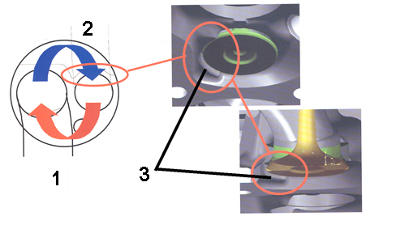

INTRODUCTION - CYLINDER HEAD(S)
- Path
- Descriptions > 10 ENGINE > 1016 CYLINDER HEAD/S > INTRODUCTION - CYLINDER HEAD(S)
- Kind
- system description
- Applies to
- engines: 1.4 8v; all production periods
- Interactive page
- https://sloeber94.github.io/elrnDB-fDbl/en/#/223000204
Applies to: engines: 1.4 8v; all production periods
CONSTRUCTION SPECIFICATIONS
The cylinder head is one-piece in aluminium alloy. The two valves per cylinder are fitted in the guides, operated by a camshaft by means of mehanical tappets with cups and adjustment shims.
The valve guides are an interference fit in the cylinder head seats.
A special reamer is used to produce the correct inner diameter after fitting.
The gasket between cylinder head and crankcsae is made out of aramidic fibre and the head does not require retightening throughout the engine life.
COMBUSTION CHAMBER (1.4 8v version only)
The new "variable turbulence" combustion chamber with a compression ratio of 11.0, together with the new inlet and exhaust ducts, the new intake manifold and improved timing guarantees a brilliant performance, restrained consumption and low pollutant emissions.

1. Inlet duct
2. Exhaust duct
3. Deflector
The variable turbulence has been achieved through the inclusion of a calibrated deflector near the exhaust valve head and special curvature of the intake manifold. This allows a consistent amount of the exhaust gases (about 25%) to be recirculated in the combustion chamber reducing fuel consumption and exhaust emissions when driving in partial load conditions.